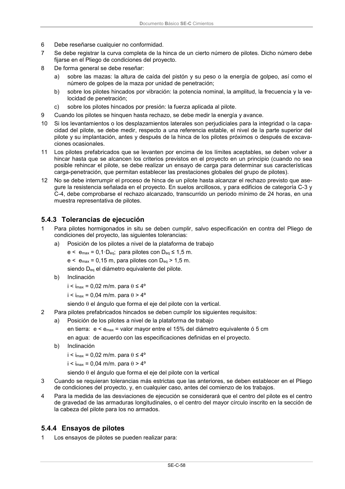

DB-SE-C · 5.4.2.2 Control de ejecución de pilotes prefabricados hincados · versión 2019-12-20 · capa oficial
Formatos: JSON compacto · Markdown · PDF fuente
Ámbito del documento · texto del ámbito · documento y tablas
ID técnico a0144 · PDF pág. 62-63 · jerarquía no validada por persona · contrastado con el literal de la página 62 (candidato tipográfico); no validado por persona · padre: raíz
5.4.2.2 Control de ejecución de pilotes prefabricados hincados 1 Los controles de todos los trabajos de realización de las diferentes etapas de ejecución de un pilote se deben ajustar al método de trabajo y al plan de ejecución establecidos en el proyecto. 2 Se deben controlar los efectos de la hinca de pilotes en la proximidad de obras sensibles o de pen- dientes potencialmente inestables. Los métodos pueden incluir la medición de vibraciones, de pre- siones intersticiales, deformaciones y medición de la inclinación. Estas medidas se deben comparar con los criterios de prestaciones aceptables. 3 La frecuencia de los controles debe estar especificada y aceptada antes de comenzar los trabajos de hincado de los pilotes. 4 Los informes de los controles se deben facilitar en plazo convenido y conservarlos en obra hasta la terminación de los trabajos de hincado de los pilotes. 5 Todos los instrumentos utilizados para el control de la instalación de los pilotes o de los efectos derivados de esta instalación deben ser adecuados al objetivo previsto y deben estar calibrados. Documento Básico SE-C Cimientos SE-C-58 6 Debe reseñarse cualquier no conformidad. 7 Se debe registrar la curva completa de la hinca de un cierto número de pilotes. Dicho número debe fijarse en el Pliego de condiciones del proyecto. 8 De forma general se debe reseñar: a) sobre las mazas: la altura de caída del pistón y su peso o la energía de golpeo, así como el número de golpes de la maza por unidad de penetración; b) sobre los pilotes hincados por vibración: la potencia nominal, la amplitud, la frecuencia y la ve- locidad de penetración; c) sobre los pilotes hincados por presión: la fuerza aplicada al pilote. 9 Cuando los pilotes se hinquen hasta rechazo, se debe medir la energía y avance. 10 Si los levantamientos o los desplazamientos laterales son perjudiciales para la integridad o la capa- cidad del pilote, se debe medir, respecto a una referencia estable, el nivel de la parte superior del pilote y su implantación, antes y después de la hinca de los pilotes próximos o después de excava- ciones ocasionales. 11 Los pilotes prefabricados que se levanten por encima de los límites aceptables, se deben volver a hincar hasta que se alcancen los criterios previstos en el proyecto en un principio (cuando no sea posible rehincar el pilote, se debe realizar un ensayo de carga para determinar sus características carga-penetración, que permitan establecer las prestaciones globales del grupo de pilotes). 12 No se debe interrumpir el proceso de hinca de un pilote hasta alcanzar el rechazo previsto que ase- gure la resistencia señalada en el proyecto. En suelos arcillosos, y para edificios de categoría C-3 y C-4, debe comprobarse el rechazo alcanzado, transcurrido un periodo mínimo de 24 horas, en una muestra representativa de pilotes.

PDF fuente redistribuible: copia fiel enlazada en esta página (SHA256 verificado).